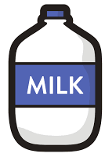

Dairy Diaries: The  Phenomenon
Chapter I: Comparing Consumption
In recent months (perhaps since November 2016?), there has been an upswing of comments expressing desires to move to Canada. This led us to wonder: what would it be like to actually live in Canada? We wanted to look at this problem through the lens of cost of living - in particular, the cost of food. To start off, we decided to explore prices over time of common food items to uncover any unexpected trends. Pay special attention to the darker vertical line on the Canada graph!
Right away, milk jumps out as drastically varying in price between the United States and Canada.
Chapter II. Contrasting Prices
Using the most recent month of price data, we calculated the percentage differences in item prices between the United States and Canada. U.S. prices are compared against Canadian prices, meaning that an item that is more expensive in Canada will show a price increase.
This graph further confirmed our suspicions that there was something strange going on with milk. For the rest of our project, we decided to zoom in on the dairy industry.
Chapter III. Taking A Closer Look at Milk
In all the visualizations below, we represented United States data with shades of blue and Canadian data with shades of red. For relationships over time, the hover text corresponds to the variable on the y axis. For relationships over price, the hover text corresponds to the variable on the x axis, which is always price.
Going into this section, our assumption was that market price was a product of the free market - in other words, dairy producers had no control over the prices that their products sold at. This is a baseline assumption in economics because most markets are price-competitive.
Step 1: Looking at Profit
To start off, we wanted to look at the most common metric for financial success: profit. Profit is a measure of how effective firms are at managing costs and production to maximize revenues. You can toggle to see the relationship between profits and time or between profits and prices.
Year
Price
In Canada, profits and prices increase together. This is strange because profits should not affect prices, yet the data suggests otherwise. Clearly, this comparison wasn't the full story. Are profits changing because of costs, or production, or something else? We decided to decompose profits into its three pieces - revenues, costs, and production - and look at each in turn.
Step 2: Counting Costs
To see how costs were changing over time, we visualized revenues and costs per gallon to compare overlapping areas. As above, you can toggle to compare costs and time versus costs and prices.
Year
Price
Since the price of milk in the United States is relatively steady and costs are steadily increasing, this tells us that the fluctuations in revenue must be caused by a third unknown variable. Costs in Canada, on the other hand, are increasing as prices increase, which is again a relationship we did not expect. It is unclear whether the high revenues are due to high prices or massive production, which leads us to the final part of our visualization - looking at production in both countries.
Step 3: Examining Production
Try comparing the trend in production to the trend in revenue for the United States, and then for Canada.
Year
Price
How is it possible that revenues in Canada are increasing while production is decreasing? The answer lies in the production over prices graph. In America, production increases as price increases, keeping prices low. In Canada, however, production decreases as price increases. Less production drives prices up, allowing farms to control market prices!
After doing some research, we found that this practice is officially known as Supply Management, and it involves the government setting production quotas on dairy products. This goes back to the beginning of the project, where you can see that milk prices in Canada stayed steady until 2002 and then started increasing rapidly (remember the line?). Our guess is that the 2002 ruling caused dairy producers to worry, as export revenue would now decrease without supplementary subsidies. To compensate, the government imposed dairy production quotas to drive up prices and increase domestic revenue, which would outweigh any loss in exports. This shift can be seen in every graph over time in this part. Clearly, this strategy was super-effective - to the detriment of the Canadian consumer.
Bonus: Less Overall Production, More Production per Farm!
After seeing the results above, we were curious about how many gallons of milk each farm was producing. Given the trends, we assumed that production per farm would be increasing in the United States and decreasing in Canada.
The dwindling number of farms means that consumers have less products to choose from, so demand stays high even when prices are raised. Farms in Canada produce more at a higher price, further compounding their profits! It seems that the dairy producers of Canada are consolidating into a monopoly market, shifting the price-setting power from the consumers to the hands of the producers.
Tiffany Wang, tw292 | Adomas Hassan, ah667 | Aditya Rajan, avr32